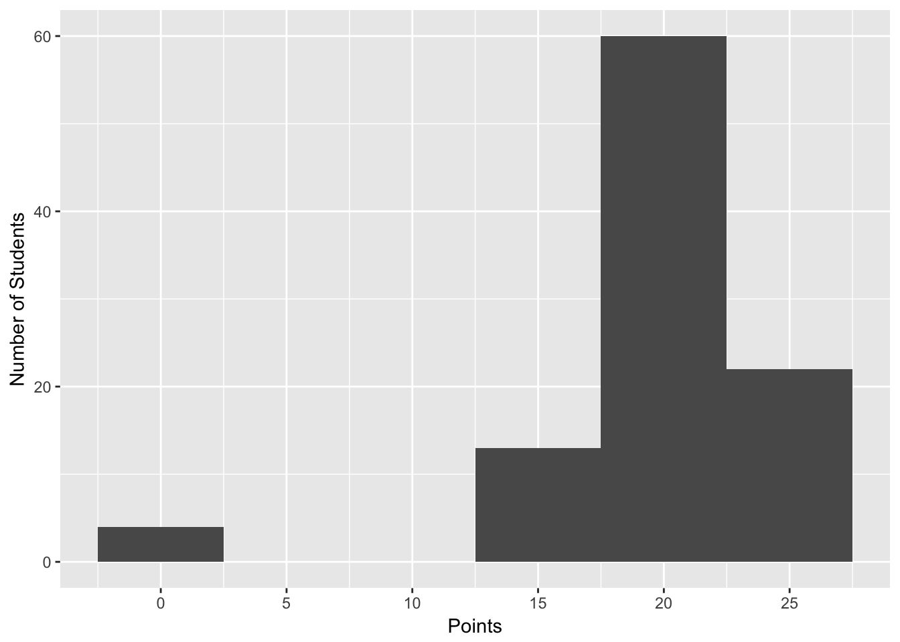
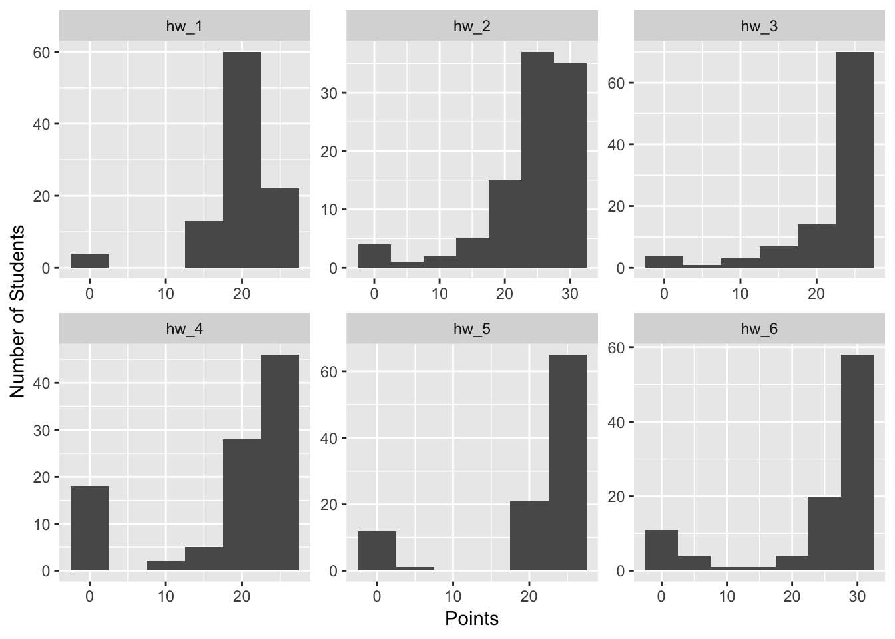
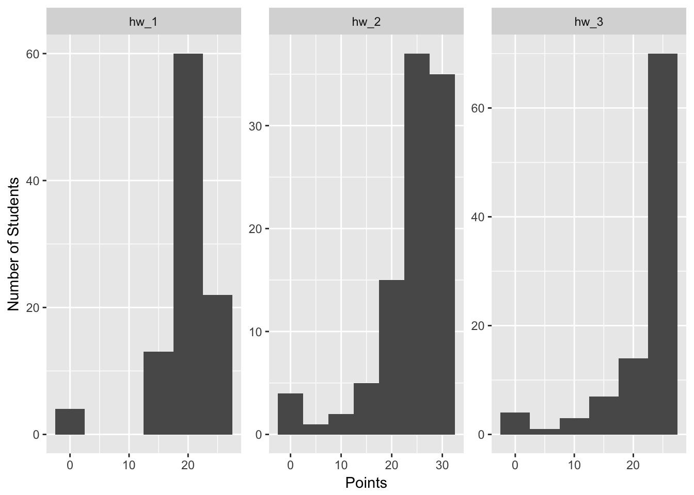

I seem to always have to go back and read how to do this over and over so I am trying to get it down here so I can use this as a reference and others might find it helpful.
Wide format is how you would usually enter data in excel with treatment down the left had side or some other category and variables for that treatment along the top row. This if a fine way to enter data but is not often that useful in R and you need to switch it to long format. I will post examples soon
We will read in the main files and load the libraries as we have worked with so far. I will do the iris.df first and then go to others that may be more complicated.
# One new package for summary stats
#install.packages("psych")
# load the libraries each time you restart R
library(tidyverse)
library(lubridate)
library(scales)
library(skimr)
library(janitor)
library(patchwork)
library(reshape2)
library(kableExtra)So a lot of us have to deal with grades but you will get the idea of how this works with a simple dataframe and then we can go on.
# read in the file
grades.df <- read_csv("data/grades.csv") %>%
clean_names() %>%
remove_empty(c("rows", "cols"))
glimpse(grades.df)## Observations: 99
## Variables: 7
## $ student_id <chr> "john_doe_1", "john_doe_2", "john_doe_3", "john_doe...
## $ hw_1 <dbl> 25.14, 25.14, 25.14, 25.14, 24.81, 24.81, 24.81, 24...
## $ hw_2 <dbl> 28.87, 28.87, 28.87, 28.85, 28.85, 28.84, 28.84, 28...
## $ hw_3 <dbl> 25.96, 25.96, 25.96, 25.96, 25.96, 25.96, 25.96, 25...
## $ hw_4 <dbl> 23.94, 23.94, 23.94, 23.94, 23.94, 23.94, 23.94, 23...
## $ hw_5 <dbl> 24.32, 24.32, 24.32, 24.32, 24.32, 24.32, 24.32, 24...
## $ hw_6 <dbl> 31.18, 31.18, 31.09, 31.06, 31.06, 31.03, 31.00, 31...This file is something that we might hae entered the grades in and it is something we are used to doing in excel. That is not bad but it limits what we can do fast with the file.
# head(grades.df) %>%
# kable("html") %>%
# kable_styling(bootstrap_options = c("striped", "hover", "condensed"))So we want to make histograms of the grades and see what they are doing in each of the homeworks. We would have to make a plot for each of them. Ugggh… This is doable though and fine but not tidy and easy.
grades.df %>% ggplot(aes(hw_1)) +
geom_histogram(binwidth = 5 ) +
scale_x_continuous(breaks=seq(0,100,5)) +
labs(x="Points", y="Number of Students")
Note that it is a bit differnet now. you hae students going down the left, item which has each homework for each student and the grades on the right. Studnet 1 is listed 6 times for each of his 6 homeworks. Why on earth would we do this!!!!!?????
grades_long.df <- grades.df %>%
gather(item, grade, -student_id) %>%
mutate(item = as.factor(item)) %>%
arrange(student_id, item)
head(grades_long.df, n=10) %>%
kable("html") %>%
kable_styling(bootstrap_options = c("striped", "hover", "condensed"))| student_id | item | grade |
|---|---|---|
| john_doe_1 | hw_1 | 25.14 |
| john_doe_1 | hw_2 | 28.87 |
| john_doe_1 | hw_3 | 25.96 |
| john_doe_1 | hw_4 | 23.94 |
| john_doe_1 | hw_5 | 24.32 |
| john_doe_1 | hw_6 | 31.18 |
| john_doe_10 | hw_1 | 23.97 |
| john_doe_10 | hw_2 | 28.64 |
| john_doe_10 | hw_3 | 25.96 |
| john_doe_10 | hw_4 | 23.94 |
Well the reason you need this format is for several types of analyses and it also makes graphing and working with the data easier. Here is an example to show all the graphs for eah homework in a quick way…
Remember we can use filter and select to do things in ggplot with before the plot command too…
grades_long.df %>%
ggplot(aes(grade)) +
geom_histogram(binwidth = 5 ) +
scale_x_continuous(breaks=seq(0,100,10)) +
labs(x="Points", y="Number of Students") +
facet_wrap("item", scales = "free")
Lets say you only wanted to show homework 1 - 3 in the above plot. How could you do this easily. Note that the | is or so we can choose homework 1 or 2 or 3.
grades_long.df %>% filter(item == "hw_1" |
item == "hw_2" |
item == "hw_3") %>%
ggplot(aes(grade)) +
geom_histogram(binwidth = 5 ) +
scale_x_continuous(breaks=seq(0,100,10)) +
labs(x="Points", y="Number of Students") +
facet_wrap("item", scales = "free")
So we can convert this back to wide format just as easily. In doing this you just need to indicate what the category is to put along the top and the measure.
grades_wide.df <- grades_long.df %>%
spread(item, grade)
glimpse(grades_wide.df)## Observations: 99
## Variables: 7
## $ student_id <chr> "john_doe_1", "john_doe_10", "john_doe_11", "john_d...
## $ hw_1 <dbl> 25.14, 23.97, 23.81, 23.81, 23.81, 23.56, 23.47, 23...
## $ hw_2 <dbl> 28.87, 28.64, 28.51, 28.51, 28.49, 28.46, 28.44, 28...
## $ hw_3 <dbl> 25.96, 25.96, 25.96, 25.96, 25.96, 25.96, 25.96, 25...
## $ hw_4 <dbl> 23.94, 23.94, 23.94, 23.94, 23.94, 23.94, 23.94, 23...
## $ hw_5 <dbl> 24.32, 24.28, 24.27, 24.26, 24.26, 24.26, 24.25, 24...
## $ hw_6 <dbl> 31.18, 30.91, 30.88, 30.86, 30.85, 30.85, 30.80, 30...So above were examples using the grades dataframe which is totally made up. Below it is done using the iris dataframe that we have played with before.
So often when we read in a file especially from excel.
This will
# read in the file
iris.df <- read_csv("data/iris.csv") %>%
clean_names() %>%
remove_empty(c("rows", "cols"))
glimpse(iris.df)## Observations: 150
## Variables: 5
## $ sepal_length <dbl> 5.1, NA, 4.7, 4.6, 5.0, 5.4, 4.6, 5.0, 4.4, 4.9, ...
## $ sepal_width <dbl> 3.5, 3.0, 3.2, 3.1, 3.6, 3.9, 3.4, 3.4, 2.9, 3.1,...
## $ petal_length <dbl> 1.4, 1.4, 1.3, 1.5, 1.4, 1.7, 1.4, 1.5, 1.4, 1.5,...
## $ petal_width <dbl> 0.2, 0.2, 0.2, 0.2, 0.2, 0.4, 0.3, 0.2, 0.2, 0.1,...
## $ species <chr> "setosa", "setosa", "setosa", "setosa", "setosa",...Because for some reason there is no variable to identify the individual we have to create one. Without this there is no way to go from long to wide format as R does not know what values belong to which species if there are no unique identifiers.
# this will add an index to the dataframe so you know what individual is which
iris.df <- iris.df %>% mutate(individual = row_number())So in this section you indicate that you want variables for trait which is along the top and for some measure or response variable. You then select the columns that will go down the left for each individual and you do this with the - sign followed by the variable.
iris_long.df <- iris.df %>% gather(trait, measure, -species, - individual)Again, here you would select the column that will become the header or variable name and the response variable to go under that and the other variables will stay along the left column.
iris_wide.df <- iris_long.df %>%
spread(trait, measure)So sometimes we want to make a variable out of two variables for grouping or graphing. This can be done easily using the unite command. Separate is the opposite.
This will create a variable that is listed first in quotes from the variables listed after it. So here we are going to make an individual and species variable from the two separate variables and will also separate these using the “_" separator which makes it easy to break that apart.
iris_unite.df <- iris.df %>%
unite("ind_species", individual, species, sep="_")We can also separate a variable with a separator in it into its respective parts. First we indicate the variable to split and then the variables we what to break it into in a concatenated lists indicated by c("1", "2")
iris_spread.df <- iris_unite.df %>%
separate(ind_species, into=c("individual", "species"), sep="_")